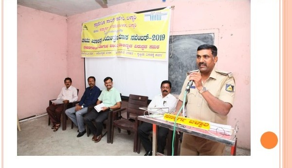

Invite a session
Schools and colleges can request an awareness programme.
Awareness work
Awareness programmes bring age-appropriate information to schools, colleges and neighbourhoods, encouraging participants to look after themselves and one another.

Take part
Schools and colleges can request an awareness programme.
Help share clear messages at events and community drives.
Join a plantation activity and care for the saplings afterwards.